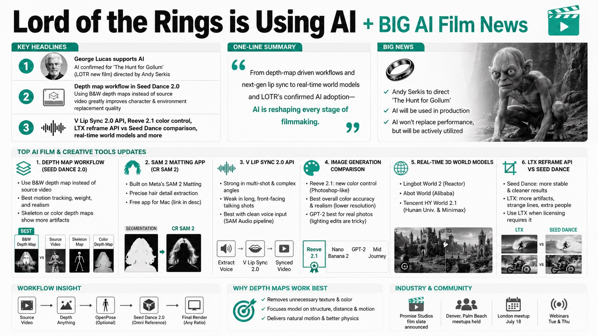

Curious RefugeMORNING DIGEST · 2026-07-18 · Curious Refuge🎬 영상
Lord of the Rings is Using AI + BIG AI Film News

01핵심 개요
항목
내용
채널
Curious Refuge (진행자: 케일럽)
주제
AI 영화 제작 워크플로 실험 및 업계 뉴스 위클리 브리핑
한 줄 요약
Seed Dance 뎁스 맵 워크플로, V 립싱크 2.0, Reeve 2.1 색상 제어, 실시간 월드 모델, LTX vs Seed Dance 비교, '반지의 제왕' 신작 AI 활용 확정 소식까지 다룬 종합 뉴스
핵심 뉴스 1
조지 루카스가 AI를 지지, 앤디 서키스가 감독하는 '골룸을 찾아서'(반지의 제왕 신작)에 AI 활용 확정
핵심 뉴스 2
Seed Dance 2.0에서 원본 영상 대신 흑백 뎁스 맵을 입력하면 캐릭터·환경 교체 품질이 크게 향상
핵심 뉴스 3
fal.ai의 V 팀이 립싱크 2.0 API 공개, Reeve 2.1은 색상 지정 기능 추가, LTX의 reframe API와 Seed Dance 화면비 변환 비교
02주요 뉴스 정리
2-1. 뎁스 맵 기반 Seed Dance 워크플로 (캐릭터/환경 교체)
구분
내용
배경
온라인에서 확산 중인 워크플로: 원본 참조 영상을 그대로 올리는 대신 뎁스 맵(흑백 깊이 지도)으로 변환해 Seed Dance에 입력
방법
1) 원본 참조 영상 확보(예: Art List) 2) GPT2 등으로 캐릭터 시트·환경 이미지 생성 3) fal.ai의 depth anything으로 뎁스 맵 생성 4) Framethrower로 오픈포즈 스켈레톤 결합 뎁스 맵도 생성 가능 5) 참조 영상/이미지와 함께 Seed Dance 2.0(옴니 레퍼런스 모델)에 입력, 16:9 등 원하는 비율로 렌더
결과 비교
원본 참조 영상 직접 사용 → 카메라·움직임은 따라가나 디테일(손 자세, 공을 머리로 받는 동작 등)이 원본과 어긋남. 흑백 뎁스 맵 사용 → 무게감·모션 트래킹 우수, 가장 자연스러움. 스켈레톤 포즈 버전 → 프레임 끊김, 물리 움직임 어색함. 컬러(피사체별 색칠) 뎁스 맵 → 카메라 앵글은 더 정확하지만 손 방향 등 미묘한 디테일 손실
추가 테스트
부부 다툼 장면, 스프링클러에서 노는 아이→외계인 교체 장면에서도 흑백 뎁스 맵이 가장 안정적인 결과를 보임 (단, 옷이 장면 중간에 바뀌는 등 완벽하지 않음)
결론
카메라·캐릭터를 최대한 제어하려면 일반 흑백 뎁스 맵이 가장 실용적. 원본 영상 그대로 쓰거나 포즈/색보정을 추가하는 건 시간 대비 효과가 낮음
2-2. Meta SAM 2 Matting 기반 자체 앱 (머리카락 디테일 로토스코핑)
구분
내용
배경
Meta가 지난주 공개한 오픈소스 도구 SAM 2 Matting: 머리카락 등 세밀한 경계를 정밀 추출
문제
코드는 오픈소스지만 비개발자가 로컬 실행하기 어려움
해결
케일럽이 Claude와 함께 맥에서 실행 가능한 무료 애플리케이션(CR SAM 2) 제작, 영상 설명란에 배포
결과
일반 세그멘테이션은 머리카락 주변이 각지고 뭉툭하게 잘리는 반면, CR SAM 2는 머리카락 디테일을 세밀하게 살리고 투명 배경(그린스크린) 출력까지 지원
2-3. fal.ai V(브이) 립싱크 2.0 API
구분
내용
발표
V 팀이 지난주 립싱크 2.0 API 공개, 원본 영상에 새 오디오를 입혀 입술 움직임을 동기화
테스트 1
강의 영상에 다른 대사 오디오 적용 → 앞부분은 괜찮으나 뒷부분에서 싱크가 완전히 깨짐
테스트 2
오렌지가 입 앞을 지나가는 저글링 영상(원래 어려운 케이스) → 거의 완벽하게 싱크, 가림 처리도 우수
테스트 3
멀티샷(여러 컷) 영상에 SAM Audio(Segment Anything Audio)로 배경음 제거 후 목소리만 입힘 → 첫 컷·마지막 컷은 양호하나 클로즈업 전환 구간에서 타이밍이 어긋남
결론
정면 응시·롱테이크 대화에는 약하지만, 멀티샷·특이 앵글 상황에서는 유용한 립싱크 도구로 평가
2-4. 이미지 생성 도구 비교: Reeve 2.1 vs 나노바나나2 vs MidJourney vs GPT2
구분
내용
핵심 업데이트
Reeve 2.1이 최종 이미지의 특정 색상을 포토샵처럼 직접 지정하는 색상 삽입 기능 추가
비교 테스트 항목
1) 색상 팔레트 지정 블록 쌓기 이미지 2) 초현대적 대저택 에디토리얼 사진 3) 사무라이 결투 장면 4) 뉴욕 카페 아이폰 사진
결과 요약
Reeve 2.1은 색상 정확도와 사실감에서 대체로 우수(단 해상도는 낮아 Topaz 등 디그레인 후처리 필요). 나노바나나2는 색감은 다르지만 구도·질감이 준수. MidJourney는 이번 테스트 전반에서 가장 저조(목이 금속처럼 보이는 등 오류). GPT2는 사진(카페 사진)에서 가장 사실적이었으나 조명 편집이 까다로움
2-5. 실시간 인터랙티브 3D 월드 모델 3종
구분
내용
Reactor 팀 - Lingbot World 2
게임 엔진 없이 실시간으로 3D 세계를 생성하며 자유 이동·상호작용(성채 공성전 프리셋 등) 가능
알리바바 - Abot World
Lingbot과 유사한 실시간 생성 방식, 위쳐 캐릭터 등 프리셋 다수, 환경과 상호작용 가능
후난대·미니맥스 팀 - Tencent HY World 2.1
기존 월드 모델 업데이트판, 안정성 높음. 단, 사용하려면 중국 전화번호 필요
2-6. LTX reframe API vs Seed Dance 화면비 변환
구분
내용
LTX 발표
비디오 업로드 후 프레임(화면비)을 변경하는 reframe API 출시
테스트 사례
월드컵 축구 영상(9:16→1080p), 눈 클로즈업, 스쿠버 다이빙, 세로→가로 변환, 오토바이 영상 등 5개 이상 케이스 비교
결과 요약
대부분 케이스에서 Seed Dance가 더 안정적(모공 디테일, 경계선 처리 등에서 우수), LTX는 경계선 아티팩트·이상한 줄무늬·불필요한 인물 삽입 등 오류 다수. 단, 촬영 현장 라이선스 등 법적 이유로 LTX를 써야 하는 경우도 있음
2-7. 업계·커뮤니티 소식
구분
내용
조지 루카스
Variety 인터뷰에서 AI 덕분에 영화 제작이 쉬워졌다며 지지 입장 표명
반지의 제왕 신작
앤디 서키스가 감독하는 '골룸을 찾아서'에 AI 활용 예정. AI가 모션 캡처 연기를 완벽 대체할 순 없지만 적극 활용하겠다고 언급
Promise Studios
Curious Refuge 모회사, 할리우드 리포터를 통해 영화 라인업 발표
커뮤니티 행사
덴버·팜비치 모임 개최, 런던 모임 7월 18일 예정, LA 모임도 예정, 매주 화·목 웹세미나 진행
03기술적 맥락
뎁스 맵 컨디셔닝: 원본 RGB 영상 대신 흑백 깊이 정보만 모델에 전달해, 원본의 불필요한 디테일(질감, 색상)은 배제하고 구조(형태·거리·움직임)만 전달하는 방식. depth anything 같은 모노큘러 뎁스 추정 모델이 로토스코핑 없이 자동으로 뎁스 맵을 생성.
오픈포즈 스켈레톤 결합: 뎁스 맵에 관절 좌표(스켈레톤)를 얹어 더 많은 포즈 정보를 제공하는 방식이지만, 이번 테스트에서는 오히려 프레임 끊김·물리 오류가 늘어나는 역효과가 관찰됨. 정보량이 많다고 항상 결과가 좋아지는 것은 아님을 시사.
매팅(Matting) vs 세그멘테이션: 일반 세그멘테이션은 이진(binary) 마스크로 경계가 각지지만, SAM 2 Matting은 알파 채널 기반의 정밀 경계 추출로 머리카락처럼 얇은 구조물까지 살려 VFX 합성용 매트로 활용 가능.
오디오 분리 후 립싱크 파이프라인: SAM Audio로 목소리만 분리 → 노이즈 제거된 클린 보이스를 립싱크 모델(V)에 입력하는 2단계 파이프라인이 멀티샷 환경에서 정확도를 높이는 핵심으로 제시됨.
월드 모델(World Model): 사전 렌더링된 3D 에셋이 아니라, 사용자 이동에 따라 프레임을 실시간으로 예측·생성하는 생성형 비디오 모델 기반 인터랙티브 환경. 게임 엔진 없이 작동한다는 점이 핵심 차별점.
04전략적 의미
워크플로 표준화 신호: "원본 영상보다 뎁스 맵이 더 나은 컨디셔닝 신호"라는 결론은 향후 AI VFX 파이프라인에서 전처리(뎁스·포즈 추출) 단계가 표준 관행으로 자리잡을 가능성을 시사.
AI가 로토스코핑·매칭 등 저부가가치 반복 작업을 대체: SAM 2 Matting, SAM Audio 등은 전통적으로 숙련 인력이 수작업하던 공정을 자동화해, VFX·사운드 후반작업 비용 구조를 바꿀 잠재력.
주류 스튜디오의 AI 채택 가속: 조지 루카스, 앤디 서키스 등 업계 거물들의 공개 지지 발언은 AI 영화 제작이 더 이상 인디·실험적 영역이 아니라 대형 프랜차이즈(반지의 제왕)까지 확장되고 있음을 보여줌.
경쟁 심화 속 도구별 포지셔닝: Seed Dance(범용 우수), LTX(현장 라이선스 대안), Reeve(색상 제어 특화), V(멀티샷 립싱크 특화) 등 각 도구가 특정 니치에서 우위를 점하는 구도로 시장이 세분화되는 중.
05핵심 포인트·비교
항목
원본 영상 직접 사용
흑백 뎁스 맵
스켈레톤 포즈 결합
컬러 뎁스 맵
캐릭터 디테일 재현
낮음(원본과 어긋남)
높음
중간(불안정)
중간(방향성 오류)
움직임 자연스러움
보통
매우 우수
낮음(끊김)
우수
처리 속도/난이도
간단
간단
복잡(오류 잦음)
복잡(색칠 필요)
최종 평가
시간 대비 비효율
최적 워크플로
비추천
부분적 유용
도구
강점
약점
Seed Dance
화면비 변환·캐릭터 교체 전반에서 LTX 대비 우수
-
LTX reframe
스튜디오 라이선스 이슈 시 대안
경계선 아티팩트, 인물 오삽입
Reeve 2.1
색상 직접 지정, 사실감 우수
해상도 낮음
V 립싱크 2.0
멀티샷·특이 앵글에 강함
정면 롱테이크 대화에 약함
06활용 시나리오
저예산 VFX 캐릭터 교체: 실사 촬영 원본을 뎁스 맵으로 변환 후 Seed Dance에 입력해 캐릭터·배경을 애니메이션/CG 스타일로 교체하는 파이프라인 구축.
다국어 더빙/재녹음 프로젝트: SAM Audio로 원본 목소리 분리 후 V 립싱크 2.0으로 새 오디오(번역 더빙 등)를 입술 움직임에 동기화.
VFX 합성용 정밀 매트 추출: 머리카락 등 세밀한 피사체가 포함된 촬영본에 CR SAM 2 같은 매팅 도구를 적용해 그린스크린 없이도 깨끗한 알파 매트 확보.
소셜 미디어용 화면비 변환: 16:9 원본 영상을 9:16(세로) 등으로 변환할 때 Seed Dance/LTX 중 상황(라이선스, 품질 우선순위)에 맞는 도구 선택.
컬러 그레이딩 사전 기획: Reeve 2.1의 색상 지정 기능으로 프로덕션 디자인 단계에서 정확한 색상 팔레트를 미리 시각화.
07현황 및 전망
Seed Dance 2.5, Seed Dance 4K 등 후속 버전이 이미 실제 단편 영화 제작에 쓰이고 있으며, 인간 관련 물리 시뮬레이션은 뛰어나지만 사물(공, 오렌지 등)의 물리 법칙 표현은 여전히 어색한 경우가 많다는 한계가 관찰됨.
월드 모델 3종(Lingbot World 2, Abot World, Tencent HY World 2.1)은 아직 완벽하지 않지만(화살 표시 오류, 지역 제한 등), 수개월~수년 내 정적 3D 환경 생성을 넘어 실시간 상호작용이 가능한 견고한 월드 모델로 발전할 것으로 전망.
반지의 제왕 신작 '골룸을 찾아서'처럼 대형 프랜차이즈가 AI를 공식 활용하기 시작하면서, AI 영화 제작 도구·워크플로에 대한 업계 표준화 논의가 가속화될 것으로 예상됨.